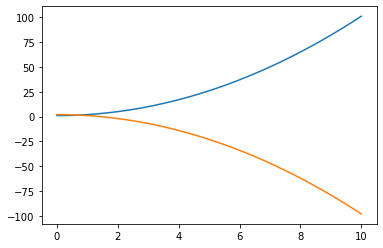
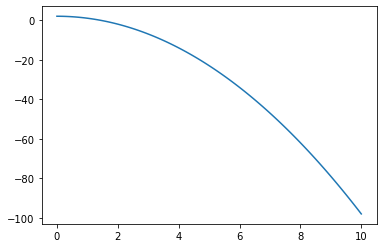
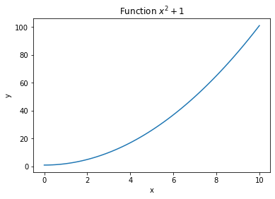
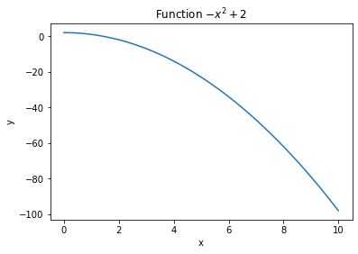
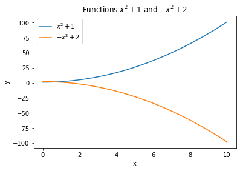
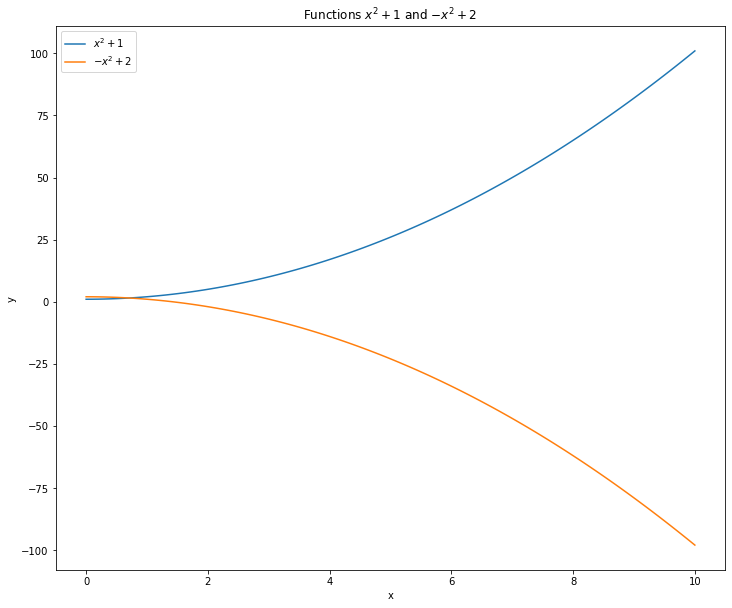
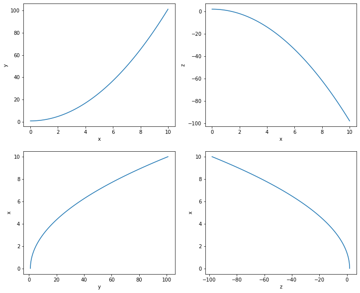
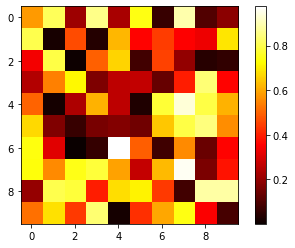
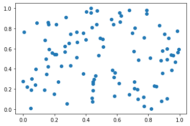
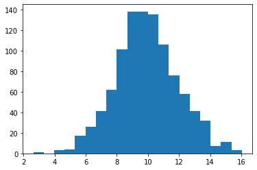

import numpy as npNumpy and Matplotlib
Numpy
NumPy is a linear algebra library in Python, with computationally expensive methods written in FORTRAN for speed.
- The reference manual is at https://numpy.org/doc/stable/.
- A nice tutorial can be found at https://numpy.org/doc/stable/user/quickstart.html
- or: https://cs231n.github.io/python-numpy-tutorial/
- If you already know Matlab, a comparison is at https://numpy.org/doc/stable/user/numpy-for-matlab-users.html
Importing libraries
To import a library in Python, you only need to use the keyword import at the beginning of your script / notebook (or more exactly, before you use it).
import numpyThink of it as the equivalent of #include <numpy.h> in C/C++ (if you know Java, you will not be shocked). You can then use the functions and objects provided by the library using the namespace of the library:
x = numpy.array([1, 2, 3])If you do not want to type numpy. everytime, and if you are not afraid that numpy redefines any important function, you can also simply import every definition declared by the library in your current namespace with:
from numpy import *and use the objects directly:
x = array([1, 2, 3])However, it is good practice to give an alias to the library when its name is too long (numpy is still okay, but think of matplotlib…):
import numpy as np You can then use the objects like this:
x = np.array([1, 2, 3])Remember that you can get help on any NumPy function:
help(np.array)
help(np.ndarray.transpose)Vectors and matrices
The basic object in NumPy is an array with d-dimensions (1D = vector, 2D = matrix, 3D or more = tensor). They can store either integers or floats, using various precisions.
In order to create a vector of three floats, you simply have to build an array() object by providing a list of floats as input:
A = np.array( [ 1., 2., 3.] )Matrices should be initialized with a list of lists. For a 3x4 matrix of 8 bits unsigned integers, it is:
B = np.array( [
[ 1, 2, 3, 4],
[ 5, 6, 7, 8],
[ 4, 3, 2, 1]
] , dtype=np.uint8)Most of the time, you won’t care about the type (the default floating-point precision is what you want for machine learning), but if you need it, you can always specify it with the parameter dtype={int32, uint16, float64, ...}. Note that even if you pass integers to the array (np.array( [ 1, 2, 3] )), they will be converted to floats by default.
The following attributes of an array can be accessed:
A.shape: returns the shape of the vector(n,)or matrix(m, n).A.size: returns the total number of elements in the array.A.ndim: returns the number of dimensions of the array (vector: 1, matrix:2).A.dtype.name: returns the type of data stored in the array (int32, uint16, float64…).
Q: Define the two arrays A and B from above and print those attributes. Modify the arrays (number of elements, type) and observe how they change.
Hint: you can print an array just like any other Python object.
A = np.array( [ 1., 2., 3.] )
print(A)
print('Shape of A is :', A.shape)
print('Size of A is :', A.size)
print('Number of dimensions of A is :', A.ndim)
print('Type of elements in A is :', A.dtype.name)
B = np.array( [
[ 1, 2, 3, 4],
[ 5, 6, 7, 8],
[ 4, 3, 2, 1]
] , dtype=np.uint8)
print(B)
print('Shape of B is :', B.shape)
print('Size of B is :', B.size)
print('Number of dimensions of B is :', B.ndim)
print('Type of elements in B is :', B.dtype.name)[1. 2. 3.]
Shape of A is : (3,)
Size of A is : 3
Number of dimensions of A is : 1
Type of elements in A is : float64
[[1 2 3 4]
[5 6 7 8]
[4 3 2 1]]
Shape of B is : (3, 4)
Size of B is : 12
Number of dimensions of B is : 2
Type of elements in B is : uint8Internally, the values are stored sequentially as a vector, even if your array has more than one dimension. The apparent shape is just used for mathematical operations. You can reshape a matrix very easily with the reshape() method:
B = np.array( [
[ 1, 2, 3, 4],
[ 5, 6, 7, 8],
[ 4, 3, 2, 1]
]) # B has 3 rows, 4 columns
C = B.reshape((6, 2)) # C has 6 rows, 2 columnsThe only thing to respect is that the total number of elements must be the same. Beware also of the order in which the elements will be put.
Q: Create a vector with 8 elements and reshape it into a 2x4 matrix.
B = np.array( [1, 2, 3, 4, 5, 6, 7, 8])
C = B.reshape((2, 4))
print(C)[[1 2 3 4]
[5 6 7 8]]Initialization of an array
Providing a list of values to array() would be tedious for large arrays. Numpy offers constructors that allow to construct simply most vectors or matrices.
np.zeros(shape) creates an array of shape shape filled with zeros. Note: if you give a single integer for the shape, it will be interpreted as a vector of shape (d,).
np.ones(shape) creates an array of shape shape filled with ones.
np.full(shape, val) creates an array of shape shape filled with val.
np.eye(n) creates a diagonal matrix of shape (n, n).
np.arange(a, b) creates a vector of integers whose value linearly increase from a to b (excluded).
np.linspace(a, b, n) creates a vector of n values evenly distributed between a and b (included).
Q: Create and print:
- a 2x3 matrix filled with zeros.
- a vector of 12 elements initialized to 3.14.
- a vector of 11 elements whose value linearly increases from 0.0 to 10.0.
- a vector of 11 elements whose value linearly increases from 10 to 20.
A = np.zeros((2,3))
B = np.full(12, 3.14) # 3.14 * np.ones(12) would also work
C = np.linspace(0.0, 10.0, 11)
D = np.arange(10, 21)Random distributions
In many cases, it is useful to initialize a vector or matrix with random values. Random number generators (rng) allows to draw numbers from any probability distribution (uniform, normal, etc.) using pseudo-random methods.
In numpy versions before 1.16, the numpy.random module had direct methods allowing to initialize arrays:
A = np.random.uniform(-1.0, 1.0, (10, 10)) # a 10x10 matrix with values uniformly taken between -1 and 1Since numpy 1.16, this method has been deprecated in favor of a more explicit initialization of the underlying rng:
rng = np.random.default_rng()
A = rng.uniform(-1.0, 1.0, (10, 10))The advantages of this new method (reproducibility, parallel seeds) will not matter for these exercises, but let’s take good habits already.
The generator has many built-in methods, covering virtually any useful probability distribution. Read the documentation of the random generator:
https://numpy.org/doc/stable/reference/random/generator.html
Q: Create:
- A vector of 20 elements following a normal distribution with mean 2.0 and standard devation 3.0.
- A 10x10 matrix whose elements come from the exponential distribution with \beta = 2.
- A vector of 10 integers randomly chosen between 1 and 100 (hint: involves
arangeandrng.choice).
rng = np.random.default_rng()
A = rng.normal(2.0, 3.0, 20)
B = rng.exponential(2.0, (10, 10))
C = rng.choice(np.arange(1, 101), 10)Manipulation of matrices: indices, slices
To access a particular element of a matrix, you can use the usual Python list style (the first element has a rank of 0), once per dimension:
A = np.array(
[
[ 1, 2, 3, 4],
[ 5, 6, 7, 8],
[ 9, 10, 11, 12]
]
)
x = A[0, 2] # The element on the first row and third columnFor matrices, the first index represents the rows, the second the columns. [0, 2] represents the element at the first row, third column.
Q: Define this matrix and replace the element 12 by a zero using indices:
A = np.array(
[
[ 1, 2, 3, 4],
[ 5, 6, 7, 8],
[ 9, 10, 11, 12]
]
)
A[2, 3] = 0.
print(A)[[ 1 2 3 4]
[ 5 6 7 8]
[ 9 10 11 0]]It is possible to access complete row or columns of a matrix using slices. The : symbol is a shortcut for “everything”:
b = A[:, 2] # third column
c = A[0, :] # first rowQ: Set the fourth column of A to 1.
A[:, 3] = 1.
print(A)[[ 1 2 3 1]
[ 5 6 7 1]
[ 9 10 11 1]]As for python lists, you can specify a range start:stop to get only a subset of a row/column (beware, stop is excluded):
d = A[0, 1:3] # second and third elements of the first row
e = A[1, :2] # first and second elements of the second rowYou can use boolean arrays to retrieve indices:
A = np.array(
[ [ -2, 2, 1, -4],
[ 3, -1, -5, -3] ])
negatives = A < 0 # Boolean array where each element is True when the condition is met.
A[negatives] = 0 # All negative elements of A (where the boolean matrix is True) will be set to 0A simpler way to write it is:
A[A < 0] = 0Q: print A, negatives and A again after the assignment:
A = np.array(
[ [ -2, 2, 1, -4],
[ 3, -1, -5, -3] ])
negatives = A < 0
A[negatives] = 0
print(negatives)
print(A)[[ True False False True]
[False True True True]]
[[0 2 1 0]
[3 0 0 0]]Basic linear algebra
Let’s first define some matrices:
A = np.array( [ [ 1, 2, 3, 4],
[ 5, 6, 7, 8] ])
B = np.array( [ [ 1, 2],
[ 3, 4],
[ 5, 6],
[ 7, 8] ])
C = np.array( [ [ 1, 2, 3, 4],
[ 5, 6, 7, 8],
[ 9, 0, 1, 1],
[ 13, 7, 2, 6] ])Transpose a matrix
A matrix can be transposed with the transpose() method or the .T shortcut:
D = A.transpose()
E = A.T # equivalentQ: Try it:
D = A.transpose()
E = A.T
print(A)
print(D)[[1 2 3 4]
[5 6 7 8]]
[[1 5]
[2 6]
[3 7]
[4 8]]transpose() does not change A, it only returns a transposed copy. To transpose A definitely, you have to use the assigment A = A.T
Multiply two matrices
There are two manners to multiply matrices:
- element-wise: Two arrays of exactly the same shape can be multiplied element-wise by using the
*operator:
D = A * B- algebrically: To perform a matrix multiplication, you have to use the
dot()method. Beware: the dimensions must match!(m, n) * (n, p) = (m, p)
E = np.dot(A, B)Q: Use the matrices A and B previously defined and multiply them element-wise and algebrically. You may have to transpose one of them.
D = A * B.T
E = A.T * B
print(D)
print(E)
F = np.dot(A, B)
G = np.dot(B, A)
print(F)
print(G)[[ 1 6 15 28]
[10 24 42 64]]
[[ 1 10]
[ 6 24]
[15 42]
[28 64]]
[[ 50 60]
[114 140]]
[[11 14 17 20]
[23 30 37 44]
[35 46 57 68]
[47 62 77 92]]Multiplying a matrix with a vector
* and np.dot also apply on matrix-vector multiplications \mathbf{y} = A \times \mathbf{x} or vector-vector multiplications.
Q: Define a vector \mathbf{x} with four elements and multiply it with the matrix A using * and np.dot. What do you obtain? Try the same by multiplying the vector \mathbf{x} and itself.
x = np.array([1, 2, 3, 4])
y = np.dot(A, x)
z = A*x
p = x*x
q = np.dot(x, x)
print(y)
print(z)
print(p)
print(q)[30 70]
[[ 1 4 9 16]
[ 5 12 21 32]]
[ 1 4 9 16]
30A: the element-wise multiplies each column of the matrix by the corresponding element of the vector. np.dot works as expected. The same happens for vector-vector multiplications: element-wise for *, dot-product for np.dot (hence the name of the method).
Inverting a matrix
Inverting a Matrix (when possible) can be done using the inv() method whitch is defined in the linalg submodule of NumPy.
inv_C = np.linalg.inv(C)Q:
- Invert
Cand print the result. - Multiply
Cwith its inverse and print the result. What do observe? Why is Numpy called a numerical computation library?
inv_C = np.linalg.inv(C)
print(inv_C)
print(np.dot(C,inv_C))[[-0.0467033 0.00274725 0.0989011 0.01098901]
[-0.62362637 0.27197802 -0.20879121 0.08791209]
[-0.61263736 0.4478022 0.12087912 -0.20879121]
[ 1.03296703 -0.47252747 -0.01098901 0.10989011]]
[[ 1.00000000e+00 0.00000000e+00 -8.32667268e-17 5.55111512e-17]
[ 0.00000000e+00 1.00000000e+00 -2.77555756e-17 -1.11022302e-16]
[ 2.22044605e-16 -1.11022302e-16 1.00000000e+00 -8.32667268e-17]
[ 0.00000000e+00 -2.22044605e-16 1.11022302e-16 1.00000000e+00]]A: Some elements which should be 0 have a very small value. This is due to numerical precision issues. Numpy does not make symbolic computations like Mathematica or sympy, it deals with numbers up to a certain precision.
Summing elements
One can sum the elements of a matrix globally, row-wise or column-wise:
# Globally
S1 = np.sum(A)
# Per column
S2 = np.sum(A, axis=0)
# Per row
S3 = np.sum(A, axis=1) Q: Try them:
# Globally
S1 = np.sum(A)
# Per column
S2 = np.sum(A, axis=0)
# Per row
S3 = np.sum(A, axis=1)
print(A)
print(S1)
print(S2)
print(S3)[[1 2 3 4]
[5 6 7 8]]
36
[ 6 8 10 12]
[10 26]You also have access to the minimum (np.min()), maximum (np.max()), mean (np.mean()) of an array, also per row/column.
Q: Try them out:
print(np.min(A))
print(np.max(A))
print(np.mean(A))
print(np.min(A, axis=0))
print(np.max(A, axis=0))
print(np.mean(A, axis=0))
print(np.min(A, axis=1))
print(np.max(A, axis=1))
print(np.mean(A, axis=1))1
8
4.5
[1 2 3 4]
[5 6 7 8]
[3. 4. 5. 6.]
[1 5]
[4 8]
[2.5 6.5]Mathematical operations
You can apply any usual mathematical operations (cos, sin, exp, etc…) on each element of a matrix (element-wise):
D = np.exp(A)
E = np.cos(A)
F = np.log(A)
G = (A+3) * np.cos(A-2)Q: Try it.
D = np.exp(A)
E = np.cos(A)
F = np.log(A)
G = (A+3) * np.cos(A-2)
print(D)
print(E)
print(F)
print(G)[[2.71828183e+00 7.38905610e+00 2.00855369e+01 5.45981500e+01]
[1.48413159e+02 4.03428793e+02 1.09663316e+03 2.98095799e+03]]
[[ 0.54030231 -0.41614684 -0.9899925 -0.65364362]
[ 0.28366219 0.96017029 0.75390225 -0.14550003]]
[[0. 0.69314718 1.09861229 1.38629436]
[1.60943791 1.79175947 1.94591015 2.07944154]]
[[ 2.16120922 5. 3.24181384 -2.91302786]
[-7.91993997 -5.88279259 2.83662185 10.56187315]]Matplotlib
Matplotlib is a python 2D plotting library which produces publication quality figures in a variety of hardcopy formats and interactive environments across platforms.
- Reference: http://matplotlib.org
- Tutorial by N. Rougier: http://www.labri.fr/perso/nrougier/teaching/matplotlib
This is the default historical visualization library in Python, which anybody should know, but not the nicest. If you are interested in having better visualizations, have a look at:
seabornhttps://seaborn.pydata.org/ggplot2https://ggplot2.tidyverse.org/bokehhttps://docs.bokeh.org/plotlyhttps://plotly.com/python/
We will nevertheless stick to matplotlib in these exercises.
The pyplot module is the most famous, as it has a similar interface to Matlab. It is customary to use the plt namescape for it:
import matplotlib.pyplot as pltplt.plot()
The plt.plot() command allows to make simple line drawings:
x = np.linspace(0., 10., 100)
y = x**2 + 1.
plt.figure()
plt.plot(x, y)
plt.show()
plot() takes two vectors x and y as inputs (they must have the same size) and plots them against each other. It is standard to define the x-axis with np.linspace() if you just want to plot a function. 100 points is usually a good choice, but you can experiments with less points.
The call to plt.show() is obligatory at the end to display the window when using a script (very common mistake to forget it!). It is not needed in Jupyter notebooks as it is implicitly called, but let’s take the habit anyway.
The call to plt.figure() is also optional, as a new figure is created when you call plt.plot() for the first time.
Q: Create a third vector z (e.g. z = -x**2 + 2) and plot it against x right after y (i.e. between plt.plot(x, y) and plt.show()). What happens?
x = np.linspace(0., 10., 100)
y = x**2 + 1.
z = -x**2 + 2.
plt.figure()
plt.plot(x, y)
plt.plot(x, z)
plt.show()
Q: Now call plt.figure() again between the two plots. What happens?
x = np.linspace(0., 10., 100)
y = x**2 + 1.
z = -x**2 + 2.
plt.figure()
plt.plot(x, y)
plt.figure()
plt.plot(x, z)
plt.show()

By default, the plot is quite empty. This is fine when experimenting in a notebook, but not when incorporating the figures in your thesis. You can make a plot look better by adding a title, labels on the axes, etc.
plt.title('My title')
plt.xlabel('x-axis')
plt.ylabel('y-axis')Q: Make the previous plots nicer by adding legends and axes.
Hint: if you know LateX equations, you can insert simple formulas in the title or axes by using two dollar signs $$.
x = np.linspace(0., 10., 100)
y = x**2 + 1.
z = -x**2 + 2.
plt.figure()
plt.plot(x, y)
plt.title("Function $x^2 + 1$")
plt.xlabel("x")
plt.ylabel("y")
plt.figure()
plt.plot(x, z)
plt.title("Function $-x^2 + 2$")
plt.xlabel("x")
plt.ylabel("y")
plt.show()

If you make multiple plots on the same figure by calling plt.plot() multiple times, you can add a label to each plot to create a legend with plt.legend():
plt.plot(x, y, label='y')
plt.plot(x, z, label='z')
plt.legend()x = np.linspace(0., 10., 100)
y = x**2 + 1.
z = -x**2 + 2.
plt.figure()
plt.plot(x, y, label="$x^2 + 1$")
plt.plot(x, z, label="$-x^2 + 2$")
plt.title("Functions $x^2 + 1$ and $-x^2 + 2$")
plt.xlabel("x")
plt.ylabel("y")
plt.legend()
plt.show()
Another advantage of declaring a figure is that you can modify its size (which is very small in a notebook by default) with the figsize argument in inches:
plt.figure(figsize=(16, 10))Q: Experiment with figure sizes.
x = np.linspace(0., 10., 100)
y = x**2 + 1.
z = -x**2 + 2.
plt.figure(figsize=(12, 10))
plt.plot(x, y, label="$x^2 + 1$")
plt.plot(x, z, label="$-x^2 + 2$")
plt.title("Functions $x^2 + 1$ and $-x^2 + 2$")
plt.xlabel("x")
plt.ylabel("y")
plt.legend()
plt.show()
Side-by-side plots
To make separate plots in the same figure, you can use plt.subplot(abc).
The function takes three digits a, b, c as input (e.g. 221 or 122) where:
- a is the number of rows.
- b is the number of columns.
- c is the index (starting at 1) of the current subplot.
Here is a dummy example of a 2x2 grid of plots:
plt.subplot(221)
plt.plot(x, y)
plt.subplot(222)
plt.plot(x, z)
plt.subplot(223)
plt.plot(y, x)
plt.subplot(224)
plt.plot(z, x)Q: Try it.
x = np.linspace(0., 10., 100)
y = x**2 + 1.
z = -x**2 + 2.
plt.figure(figsize=(12, 10))
plt.subplot(221)
plt.plot(x, y)
plt.xlabel('x')
plt.ylabel('y')
plt.subplot(222)
plt.plot(x, z)
plt.xlabel('x')
plt.ylabel('z')
plt.subplot(223)
plt.plot(y, x)
plt.xlabel('y')
plt.ylabel('x')
plt.subplot(224)
plt.plot(z, x)
plt.xlabel('z')
plt.ylabel('x')
plt.show()
plt.imshow()
Matrices can be displayed using plt.imshow(). You can choose the color code with the cmap argument (e.g. gray or hot).
plt.imshow(A, cmap=plt.cm.hot, interpolation='nearest')
plt.colorbar()plt.colorbar() allows to show a vertical bar indicating the color code.
The interpolation method can also be selected for small matrices ('nearest by default, but you can choose interpolation="bicubic" for a smoother display).
(0, 0) is at the top-left of the image, the first axis is vertical. Change it with the origin parameter.
Q: Create a 10x10 matrix (e.g. randomly) and plot it. Try different color maps (https://matplotlib.org/3.1.0/tutorials/colors/colormaps.html and interpolation methods.
A = rng.uniform(0., 1., (10, 10))
plt.figure()
plt.imshow(A, cmap=plt.cm.hot, interpolation='nearest')
plt.colorbar()
plt.show()
plt.scatter()
If you want to display dots instead of of lines or pixels, plt.scatter takes two vectors of same size and plots them against each other:
plt.scatter(x, y)Q: Create two vectors with 100 elements and make a scatter plot.
x = rng.uniform(0., 1., 100)
y = rng.uniform(0., 1., 100)
plt.figure()
plt.scatter(x, y)
plt.show()
plt.hist()
Histograms can be useful to visualize the distribution of some data. If z is a vector of values, the histogram is simply:
plt.hist(z, bins=20)The number of bins is 10 by default, but you can of course change it.
Q: Draw 1000 values from a normal distribution of your choice and make an histogram.
z = rng.normal(10., 2.0, 1000)
plt.figure()
plt.hist(z, bins=20)
plt.show()